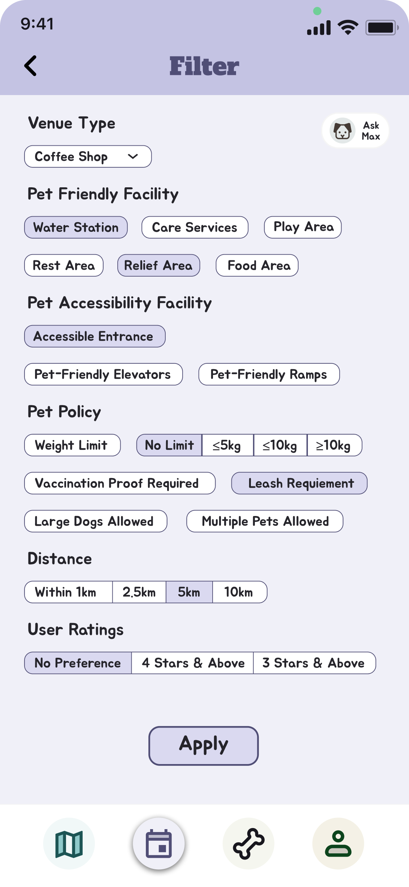

- roselyn.png)
 - roselyn.png)
 - cafes - roselyn.png)
 - venue detail- roselyn.png)




APP DESIGN · INFO30008
鼓励主人多遛狗 — 通过收集虚拟骨头兑换奖励，让每次出行都充满动力
一款面向养狗人士的综合移动应用，作为狗友友好地点的全方位指南，弥合宠物主人与周边环境之间的信息鸿沟。随着城市化加速，适合狗狗活动的绿色空间和宠物友好场所日益分散，Dogo 帮助主人快速找到可携狗前往的地点。核心激励机制通过出行收集虚拟骨头来兑换实物奖励，同时连接本地商家活动与宠物社群。

对狗主人（新手、忙碌学生、经验养狗者）、兽医和训犬师进行了五轮深度访谈，从不同视角全面了解养狗过程中的需求与痛点。绘制包含九个利益相关者的 Rich Picture，系统性分析各方需求关系。
基于访谈洞察，为三大功能模块分别设计交互概念和用户流程。使用 Figma 制作高保真交互原型，每个模块包含完整的主要用户路径和边缘场景。
对初始原型进行了五轮用户测试访谈，收集反馈用于迭代改进。重点关注功能可发现性、交互流畅度和视觉清晰度，每轮测试后针对性优化设计。
通过传统筛选和 AI 对话两种方式，快速查找狗友友好地点。交互式地图用不同颜色标识地点的宠物友好程度，支持按公园、餐厅、商场等类别筛选，提供用户评价和相关信息。
核心激励机制：主人出行时在地图上收集虚拟骨头，累积后可兑换优惠券、狗粮、玩具等实物奖励，鼓励主人多带狗狗外出探索新地点。
参与本地商家发布的宠物主题活动，与其他狗主人互动交流，促进宠物友好社群的形成与连接。
Figma 高保真原型 · 点击体验完整用户流程